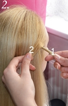

WATERFALL (KEERUGA)
Vaja läheb: õhuke patsikumm, kaunistus.
Kammi juuksed eelnevalt üle pea (nagu pildil) või siis pealaelt kahele.
-
1. Võta paremalt poolt kaks juuksesalku ja eralda need üksteisest ära – nr 1 ja nr 2. - 
2. Keera alumine (nr 2) eraldatud salk üle teise (nr 1) -
1. Võta paremalt poolt kaks juuksesalku ja eralda need üksteisest ära – nr 1 ja nr 2.
NB!
Kellel ei ulatu juuksesalgud ühelt poolelt teiseni, võib patsi lõpetada pea keskel – punute mõlemalt poolt. Sellel õpetusel lõpetatud vasakul
2. Keera alumine (nr 2) eraldatud salk üle teise (nr 1)
-
3. Võta ülevalt poolt üks juuksesalk ning pane see üle ülemise haru (nr 2) -
4. Veendu, et läbi võetud salk jääks ilus (ei mingeid pusasid ega üleliigseid karvu). Aseta nr 1 salk ülevalt tulnud salgu pealt läbi. -
3. Võta ülevalt poolt üks juuksesalk ning pane see üle ülemise haru (nr 2)
4. Veendu, et läbi võetud salk jääks ilus (ei mingeid pusasid ega üleliigseid karvu). Aseta nr 1 salk ülevalt tulnud salgu pealt läbi.
-
5. Vaheta salkude nr 1 ja 2 asukohad ära – see, mis enne oli ülemine, on nüüd alumine ehk siis nr 1 salk aseta üle nr 2 salgu. (nr 2) -
6. Võta jälle lisasalk ülevalt, too see nr 1 salgu pealt ja nr 2 salgu alt läbi ja seejärel tee nii, nagu eelmises punktis kirjeldatud. -
5. Vaheta salkude nr 1 ja 2 asukohad ära – see, mis enne oli ülemine, on nüüd alumine ehk siis nr 1 salk aseta üle nr 2 salgu.
6. Võta jälle lisasalk ülevalt, too see nr 1 salgu pealt ja nr 2 salgu alt läbi ja seejärel tee nii, nagu eelmises punktis kirjeldatud.
-
7. Keeruta nii lõpuni välja, iga keeru vahelt pane läbi üks ülemine salk. -
8. Vasakule poole jõudes kinnita need kaks salgu otsa (nr 1 ja 2) õhukese patsikummiga ja pane kaunistus (kui soovid). -
7. Keeruta nii lõpuni välja, iga keeru vahelt pane läbi üks ülemine salk.
8. Vasakule poole jõudes kinnita need kaks salgu otsa (nr 1 ja 2) õhukese patsikummiga ja pane kaunistus (kui soovid).
-

9. Tulemus. -
10. Tulemus. -
9.-10. Tulemus.
Õpetuse allikas: http://drisainer.wordpress.com/2013/05/02/waterfall-opetus-punutis/
Autor: Aili (https://www.facebook.com/Ailisoengud)